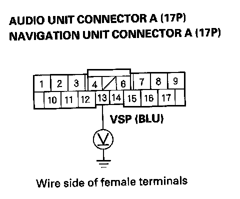

Volume Does Not Increase With Speed
Volume does not increase with speed1. Verify the SVC mode setting in the navigation or audio unit sound set-up.
Is the SVC set to off?
YES - Change the setting to "Mid" and retest.
NO - Go to step 2.
2. Do the self-diagnostic function for the vehicle speed pulse indication.
Does the self-diagnostic function indicate a VSP signal?
YES - Substitute a known-good navigation or audio unit and retest. If the symptom/indication goes away, replace the original navigation or audio unit.
NO - Go to step 3.
3. Test-drive the vehicle at highway speeds, and monitor if the volume increases.
Do the volume increase?
YES - Intermittent failure, the system is OK at this time.
NO - Go to step 4.
4. Remove the navigation unit. or audio unit, and disconnect the navigation, or audio unit connector A (17P).

5. Drive the vehicle, and have an assistant measure voltage at navigation or audio unit connector A (17P) terminal No. 13.
Is there 0-5 V Pulse?
YES
- With navigation: Replace the navigation unit.
- Without navigation: Replace the audio unit.
NO - Repair open or shorts in the wire between the navigation, or audio unit connector A (17P) No. 13 terminal and the ECM/PCM connector A (44P) No. 29 terminal. If no opens or shorts are found, substitute a known-good ECM/PCM and recheck. If the symptom/indication goes away, replace the original ECM/PCM.